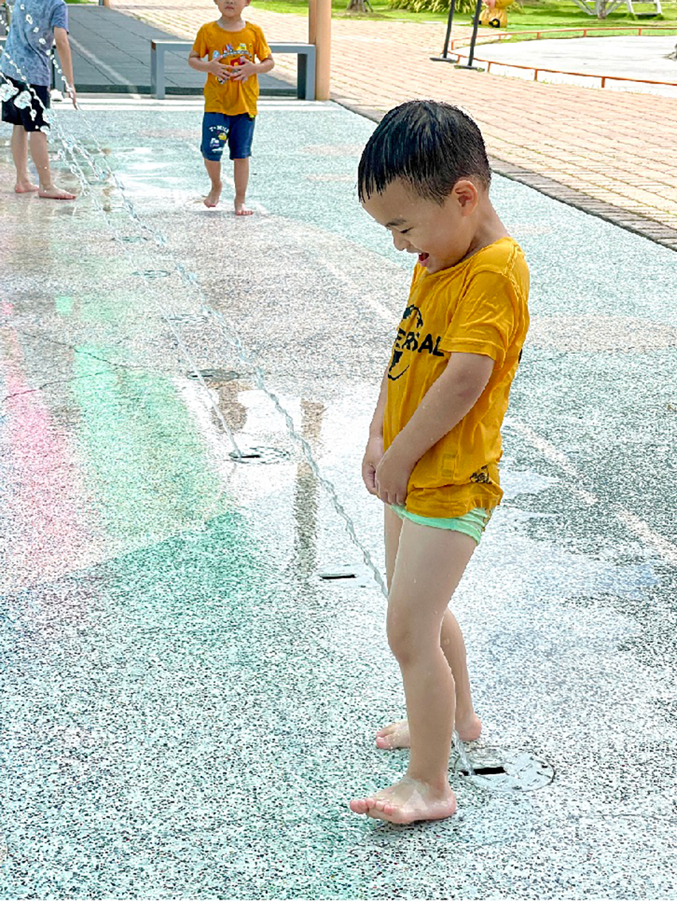
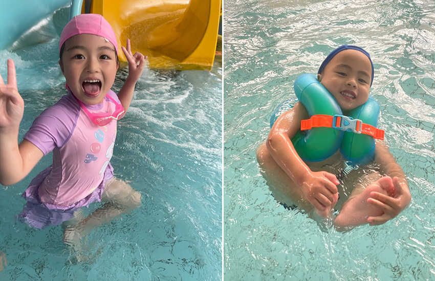
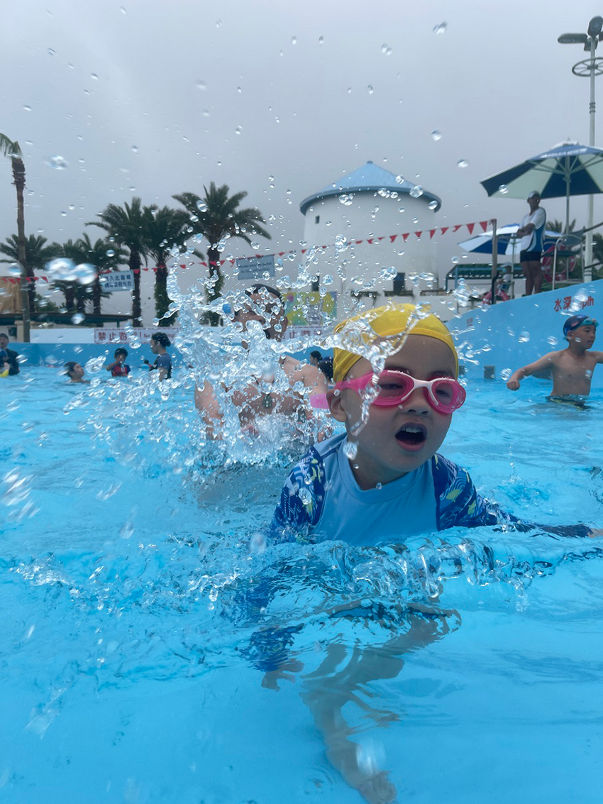
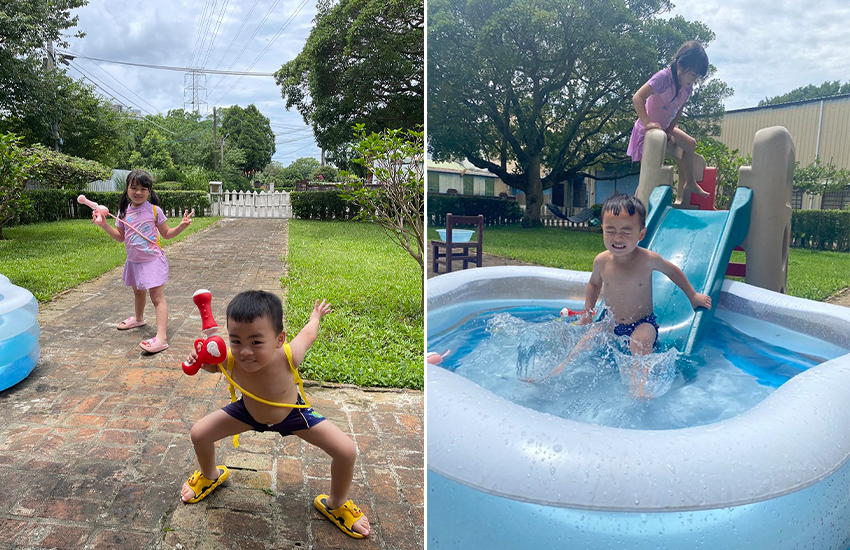

過了端午，夏天就來了，陽光強的睜不開眼，蟬鳴聲立體的像是環繞式音響，這種炎熱的天氣，玩水永遠是最能消暑的好方法。玩水有很多種選擇，對於小孩來說，涼快的水花，就是開心的代表。今年的端午節前後，從廣場噴水池、兒童游泳池、水樂園一路開玩，小孩玩得開心，笑得燦爛，充分消耗體力，玩水也應該列入幼兒運動的選項之一。
|  |
玩水的樂趣，先從最簡單的說起，廣場噴水池時而左時而右，不知道何時開始與何時停止的噴水邏輯，逗得小孩樂開了花，滿場跑的追逐噴起的水柱。小男生總是有最平凡的快樂，站在水柱前充當真人版尿尿小童，會讓你好氣又好笑。廣場噴水池沒有甚麼衣著限制，泳衣可以，日常衣服也可以，唯獨特地標註了一句，至少請小孩要穿著小內褲唷！想必管理者常常可以看見青春的肉體在廣場奔跑，只能說每個標語，都有它的用意所在。
進階一點，穿上泳衣戴上泳帽、蛙鏡和泳圈，來去有滑水道的兒童游泳池，位在平鎮的室內溫水游泳池，在地人都知道的老字號景點，與麥當勞、舞廳、遊藝場在同一棟大樓的奇妙配置，第一次進來的時候只能說是大開眼界。泳池雖然帶點歲月痕跡，但水質乾淨，維護得不錯，是個適合消暑玩耍的好去處。帶上游泳圈，全身泡在清涼的水池裡，與廣場噴水池，又是不一樣的戲水享受，游泳池裡還有限時開放的滑水道，迴旋的滑水道對幼兒園小童來說，帶有一點點刺激但又讓人忍不住想一再嘗試挑戰，爬上樓梯後咻的溜下，前前後後大概玩了超過20次，玩水結合溜滑梯，大大提高了玩水的樂趣。
|  |
豪華版則是托仁寶家庭日的福來到六福村，搶先體驗了水樂園的樂趣，比起兒童游泳池，水樂園堪稱豪華戲水遊樂區，各項滑水道應有盡有，不過對幼兒園孩子來說，還是太刺激了一些，一旁的水迷宮才是小孩心頭好，大型的遊樂設施與水結合，淺淺的水池加上三個不同長度與高度的滑水道，還有不時滿溢傾倒的大水桶，光這區就玩得不亦樂乎，不過來水樂園玩的重點不在這區，一旁的人工造浪池讓泳池戲水提高到另外一個層次，一波一波翻湧的浪衝上身體，小孩擋不住浪的威力，在水中翻滾了幾次，即便是倒栽蔥嗆水了幾次，也是欲罷不能直直往前衝，玩水的魅力的真的是不容小覷。
|  |
有了初階進階與豪華版的玩水經驗之後，小孩們對於玩水的渴望無法停止，端午節當天艷陽高照，大人熱得只想待在冷氣房裡躺著，但小孩們一心想著可不可以再去哪裡哪裡玩個水。都說端午節的午時水，開運招財、補身健體，於是家用泳池就在端午節午時開張了，充氣泳池擺在院子裡，曬曬太陽吸取天地正氣，小孩也能玩水消暑過過癮，有水可以玩，就算不吃飯也不會餓，從午時玩到未時，紮紮實實的兩個小時，天地正氣都在這時辰吸收了。兩小玩到欲罷不能，要把小孩從泳池撈起，小孩都還不情願，直到最後發現兩隻已經曬得臉紅通通、身體黝黑，不得不起來，才為這波玩水樂暫時畫下句點。
|  |
不過夏天才剛開始，端午節只是迎接夏天的第一個代表，想必玩水之路不僅侷限於此，溪流大海可都還沒去呢！有水可以玩的夏天，真好！